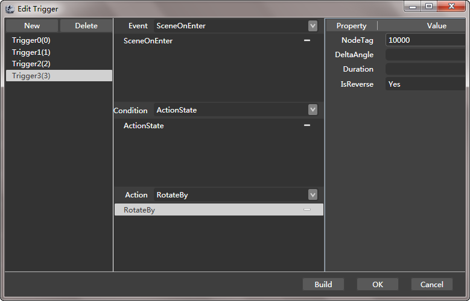

Trigger
Intro

In cocostudio 1.2.0.0 version,the scene editor newly adds the trigger function .
A trigger is a trigger mechanism by event, the predefined action or function will automatically perform when a particular events are triggered .
Function
Add New Tigger
Click the button labled “Tigger”，The button labeled "New Trigger" will display.
By default the new trigger will be named after the Arabic numerals and arranged in numerical order.
Event
Select the trigger condition.
The editor provides eight event by default ,they are SceneOnEnter、SceneOnExit、SceneInit、SceneUpdate、TouchBegan、TouchMoved、TouchEnded、TouchCancelled.
In addition to the default event, you can also according to your need to define their own events. According to the request you can modify the configuration file（Path： $User\Documents\CocoStudio\Samples\Trigger\Trigger\Event.xml）.The property of “ClassName” is function name in the program .The property of “Name” is event name in the editor.
Condition
Conditions are used to filter events， the requirements of events which doesn't conform to the condition will be discarded . When it does not contain any conditions, action will be triggered directly.
When contains multiple conditions，their relationship is and.
The editor provides four condition by default ，they are TimeElapsedTo、ActionState、IsNodeInRect、IsNodeVisible.In addition to the default condition，you can also according to your need to define their own condition.According to the request you can modify the configuration file（Path： $User\Documents\CocoStudio\Samples\Trigger\Trigger\Condition.xml）.The property of “ClassName” is function name in the program .The property of “Name” is condition name in the editor .
Action
Actions that will achieve the function of the trigger.
The editor provides twelve action by default， PlayMusic、MoveTo、MoveBy、RotateTo、RotateBy、 ScaleTo、ScaleBy、SkewTo、SkewBy、TriggerState、ArmaturePlayAction。In addition to the default condition，you can also according to your need to define their own action。According to the request you can modify the configuration file（Path：$User\Documents\CocoStudio\Samples\Trigger\Trigger\Event.xml）.The property of “ClassName” is function name in the program .The property of “Name” is action name in the editor .
Property
Properties defined for the condition or action.
Build
Generate code files based on the current trigger configuration, you can to add the code file directly to your project.
The generated file location is located in the named "Code" folder under the current project folder directory.
OK
Save configuration of the current trigger .
Cancel
End configuration of the current trigger . The modified configuration will be lost.